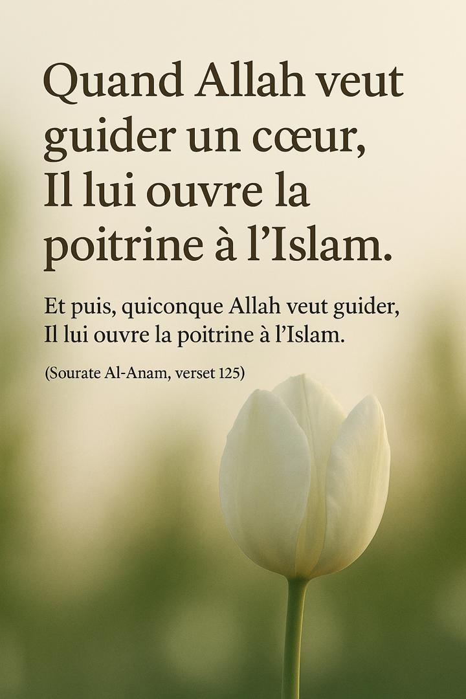

Quand Allah veut guider un cœur, Il lui ouvre la poitrine à l'Islam
Dans le tumulte du monde, nombreux sont ceux qui cherchent des réponses, un sens, une direction. Mais le cœur ne s'ouvre pas à la vérité par la seule volonté de l'homme. C'est Allah qui ouvre la poitrine de celui qu'Il veut guider.
Cette ouverture du cœur n'est pas qu'une simple acceptation intellectuelle. Elle est une lumière intérieure, une paix profonde, une clarté soudaine face à la vérité. Elle permet à l'individu de ressentir une proximité avec son Créateur, d'embrasser la foi avec sincérité, et de se libérer des chaînes du doute ou de l'égo.
Les signes de cette guidance divine
Une compréhension soudaine et profonde de la vérité
Une sérénité qui dépasse toute compréhension terrestre
Un désir sincère de se rapprocher d'Allah et de Sa religion
Affranchissement des doutes et des chaînes de l'égo
Cette guidance est un don, une miséricorde qu'on ne peut ni forcer ni simuler. Elle arrive souvent au moment le plus inattendu, mais jamais par hasard. C'est une manifestation de la sagesse et de la miséricorde infinies d'Allah envers Ses serviteurs.
Que chacun d'entre nous demande à Allah d'ouvrir sa poitrine à Sa religion, de le guider sur le chemin droit et de raffermir son cœur face aux épreuves et aux illusions de ce monde.
آمين يا رب العالمين